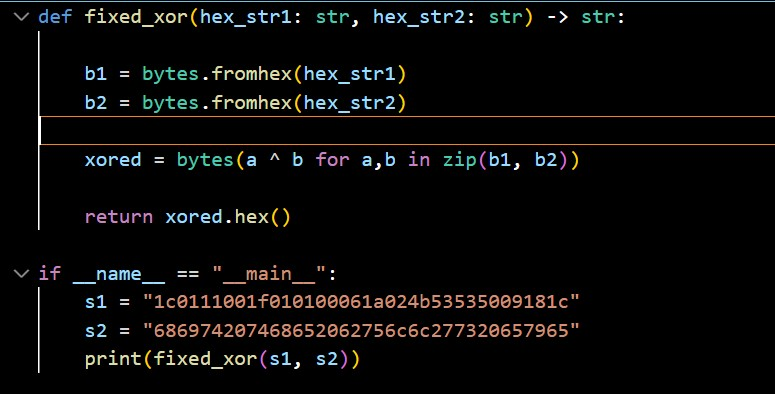

1.
Tämä tehtävä on Crypto pals-tehtävä setin ensimmäinen tehtävä. Tässä tehtävässä tulee muuntaa hexadesimaali jono base64 muotoon.
Lähdin kokeilemaan tätä tehtävää pythonilla, koska se on minulle kaikista tutuin ohjelmointikieli. Koska valmista base64 kääntäjää oli sallittua käyttää, importoin sen suoraan ohjelmaan.
Itse ratkaisu oli melko lyhyt ohjelma:

Ensin määrittelin "hex_to_base64" nimisen funktion, joka pyytää käyttäjältä heti ensimmäisenä hexadesimaali jonon.
Ohjelma ei meinannut heti toimia, koska kopioin heksadesimaalin suoraan tehtävä sivustolta ja sen mukana siihen tuli ylimääräisiä välilyöntejä. Joten lisäsin .strip() lauseeseen, jotta ohjelma ei ota sellaisia huomioon.
Lopputulos tallentuu muuttujaan "hex_str".
Seuraavaksi try lohkossa käsitellään mahdolliset virhetilanteet sekä suoritetaan lause b64_str = base64.b64encode(raw_bytes).decode()
Eli ohjelma siis kääntää tavut base64 muotoon ja sitten vielä decode() toiminnon avulla string muotoon.
Rivi "print("Base64:", b64_str)" printtaa tuloksen käyttäjälle.
"except ValueError: print("Virhe, tämä ei ole hexiä.")"" on lisäämäni virheenkäsittely, eli mikäli annettu merkkijono ei ole heksiä, se palauttaa tuon virhetekstin.
Lopuksi vielä "if name" blokki, joka suorittaa ohjelman.
2.
Tässä tehtävässä ratkaistaan Crypto pals 2 tehtävä. Siinä tulee kirjoittaa funktio, joka tekee xorrauksen kahdelle samanpituiselle heksamerkkijonolle. Sitten tulos palautetaan samassa muodossa.
Eli ensin määrittelin funktion nimeltä "def fixed_xor" joka saa kaksi heksadesimaalijonoa ja paluttaa uuden jonon.
bytes.fromhex() muuntaa heksat tavuiksi (bytes englanniksi). Lisäsin tämän jotta ne voidaan xorrata.
xored = bytes(a ^ b for a,b in zip(b1, b2)) suorittaa xorrauksen, zip yhdistää tavut pareiksi. a ^ b suorittaa xorrauksen kaikille tavupareille, bytes() kokoaa tuloksen yhdeksi tavujonoksi.
return xored.hex() muuntaa xorrauksen heksadesimaaliksi.
if name-lohkossa määritellään kaksi heksajonoa, s1 ja s2 joita testasin suoraan tehtävän antamalla merkkijonoilla. Lopuksi kutsuin ja printtasin "fixed_xor" joka antaa tuloksen.

3.
Tässä tehtävässä on heksadesimaalijono joka on xorrattu yhdellä merkillä.

Ensin määrittelin funktion single_byte_xor, joka sisältää tavujonon jonka nimesin dataksi sekä yhden kokonaisluvun, sen nimi on key.
-> bytes kertoo että funktio antaa bytes arvon takaisin.
return bytes(b ^ key for b in data) käy läpi jokaisen tavun b data-tavuissa.
Sen jälkeen jokainen tavu xorrataan ja tulokset laitetaan jälleen bytes() kutsulla tavujonoksi.
Seuraaksi määrittelin funktion nimeltä "def return_english(buf: bytes) -> int:"
(line: bytes) -> int: arvioi tavujonon nimeltä "line" sen perusteella, kuinka paljon siinä on englannin kaltaisia piirteitä. Sitten se palauttaa kokonaisluvun.
common on merkkijono, joka sisältää tavujonon (b) yleisimmistä englanninkielen sanoista. En osannut tehdä lausetta hyväksymään sekä isoja että pieniä kirjaimia, joten määriteltynä on sekä isot että pienet kirjaimet.
Viimeinen rivi vain antaa True/False jokaiselle tavulle perustuen siihen onko niiden tavuarvo äskeisessä common merkkijonossa. Tämän lauseen muotoilussa pyydetty apua Copilotilta komennolla "help me debug this function".

Seuraava funktio pyrkii murtamaan itse xorrauksen, syötteenä on heksamerkkijono.
cipher = bytes.fromhex(hex_str) muuttaa heksat tavuiksi.
Seuraavaksi candidates luo generaattorin, joka tuottaa 256 tuplea, yhden jokaiselle potentiaaliselle avaimelle.
single_byte_xor(cipher, k) yrittää xorrata avaimella k ja xore_english() pisteyttää ko. tekstin.
best_score, best_key, best_plain = max(candidates, key=lambda t: t[0]) käy läpi generaattorin antamat tuplet ja palauttaa sen tuplen jonka avainfunktio key= on suurin.
Lopputulokset annetaan kolmelle muuttujalle, best_score, best_key, best_plain.
return palauttaa parhaan pisteytyken, sen avaimen ja tavujonon.
if name lohkossa cipher_text määrittää heksamerkkijonon jota ohjelmatutkii, sitten kutsutaan crack_songle_xor(cipher_hex) funktiota joka purkaa arvot näihin kolmeen muuttujaan.
print rivi näyttää avaimen merkkeinä, mikäli se ei toimi tulostuu vain tyhjä merkkijono.
try: yrittää kääntää tavut UTF-8 tekstiksi, mikäli se ei toimi virheen käsittely palauttaa ainakin osan merkeistä jotka se osasi tulkita.
Viimeinen print palauttaa plaintextin käyttäjälle.

Lopputulos:

4.
Tässä tehtävässä tulee etsiä xorrattu merkkijono annetusta tiedostosta. Tiedoston kopioin tekstitiedostoksi omaan hakemistooni ja syötin nimellä 4.txt
Ohjelma perustuu paljon edellisen tehtävän koodiini, ehkä merkittävänä erona detect_single_char_xor_line funktio.
Se lukee hex rivejä tiedostosta, testaa niitä crack_single_byt_for_bytes funktiolla ja palauttaa score, key, plaintext, index ja original_line.
Main lohko lukee 4.txt tiedoston ja etsii sieltä parhaiten sopivan xorratun rivin. Sitten se tulostaa rivi numeron, avaimen ja plaintextin.


Tulos:

Lähteet
Kurssin materiaali
Strongdm https://www.strongdm.com/blog/extract-unzip-tar-gz-files-linux